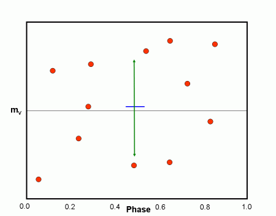
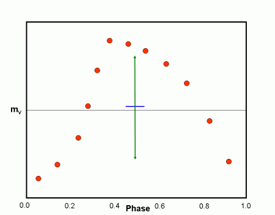

Period Determination (optional)
It is necessary to know the period of a variable star in order to form a light curve from photometric observations. Finding the period is a complicated procedure which involves using computer programs to analyze the observations. These period determination algorithms form light curves for a large number of periods and then use a statistical function to and help the astronomer identify the best curve. Although, these period determination programs are very useful, they do not always unambiguously identify the correct period and ultimately the astronomer must depend on knowledge of light curves to identify the correct period.
The particular method used in this module is known as PDM (Phase Dispersion Minimization). It evaluates trial periods by noting the scatter of the data about the mean light curve. It does this by dividing up the light curve into phase bins. The statistical quantity that we will use to evaluate periods is θ – the ratio of the weighted scatter in the bins to that for the whole light curve. In the example below the light curves are divided into 5 bins each of width 0.2 in phase. The general argument is that for a “good” period the weighted sum of the scatter in the bins should be much less than the scatter for the whole light curve. While for a “bad” period, the weighted sum of the scatter in the bins should be comparable for that in the whole light curve. Thus, PDM operates on the principle that for a correct light curve, the data points in a small range of phase should have close to the same magnitude.
In the figures that follow blue lines are used to show the average magnitude of a group of points while the green arrows are used to estimate the scatter of points. In Figure 1 we see the light curve for an RR Lyrae star formed with the correct period. The scatter in each phase bin is relatively small using the correct period. Figure 2 shows the scatter for this same light curve over all phase values. The ratio of these two scatters, θ, is small for the correct period, probably less than 0.5.
Figure 3 shows the scatter in each phase bin when the light curve is formed with an incorrect period. Figure 4 shows the scatter for the complete light curve for this same incorrect period. The ratio of these two scatter is quite comparable and we get a θ value near 1.

